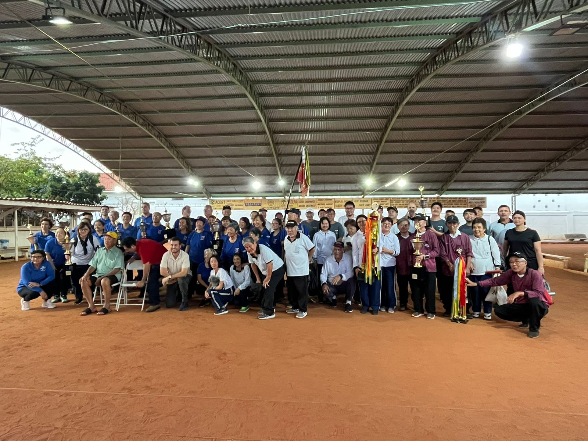

Departamento de Gateball
Um Esporte de Estratégia e Precisão para Todas as Idades
O Gateball (ゲートボール) é um esporte de equipe dinâmico e estratégico, originário do Japão. Jogado em um campo retangular, o objetivo é acertar bolas numeradas através de três 'gates' (arcos) e, por fim, acertar um pino central ("agari"). É um esporte que combina precisão, tática e muito trabalho em equipe.
Nossa Equipe e Sede (ACERT – GATEBALL DE TUPÃ – SP)
Nosso departamento é um ponto de encontro para entusiastas do esporte em Tupã e região, promovendo saúde, amizade e competição saudável.
- Diretora: Eny Abe Tanaka
- Sede: Rua São Sebastião, 145 – Parque Universitário II, Tupã-SP
Benefícios do Gateball
A prática regular do gateball vai muito além da competição. Ela desenvolve:
- Estímulo Mental: Exige pensamento estratégico, planejamento e antecipação das jogadas.
- Saúde Física: Promove atividade física leve e contínua, excelente para a mobilidade e coordenação.
- Convivência Social: Sendo um esporte de equipe, fortalece laços de amizade e comunidade.
- Inclusão: É um dos poucos esportes onde jovens e idosos podem competir em pé de igualdade.
Venha Jogar Conosco!
Seja você um jogador experiente ou um iniciante curioso, as portas estão abertas. Entre em contato conosco pelo telefone acima ou venha nos visitar durante um treino. Venha fazer parte da nossa família!
Entre em Contato